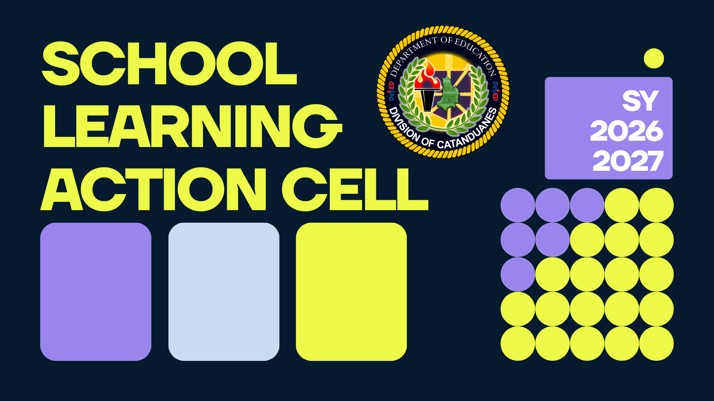

Objective
To strengthen teacher competencies for enhanced learning delivery in all classrooms and learning centers
Target Participants:
All teachers in service
| No. of Target Participants | No. of Actual Participants | Percentage of Actual VS Target |
|---|---|---|
| 3,652 |
| Reference No. | Title of Issuances | Link |
|---|---|---|
| Division Memorandum No. 0273, s. 2026 | Submission of School Learning Action Cell (SLAC) Plan for SY 2026-2027 | View |
| DM-OUHROD-2024-1576 | Guidelines on the Conduct of Regional Office, Schools Division Office, and Schools-Developed Professional Development Programs |
View |
| No. | Name of Template | Link |
|---|---|---|
| 1 | Five (5) Month School LAC Plan | View |
| 2 | Sample End-of-Day Evaluation | View |
| 3 | Budget Matrix | View |
| 4 | Workplace Application Plan | View |
| 5 | School-Based Professional Development Program Design QA of School Heads | View |
| 6 | School-Based Professional Development Program Design QA of PSDS | View |
| 7 | Endorsement (School Head, PSDS, and OIC-SDS) | |
| 8 | Curriculum Vitae (Learning Facilitators must be least a Master Degree Holder and with expertise to the topic assignment) | View |
| 9 | Quality Assured Session Guides and Slide Decks | |
| 10 | Individual Profile Sheet (to be provided by the HRDS) |